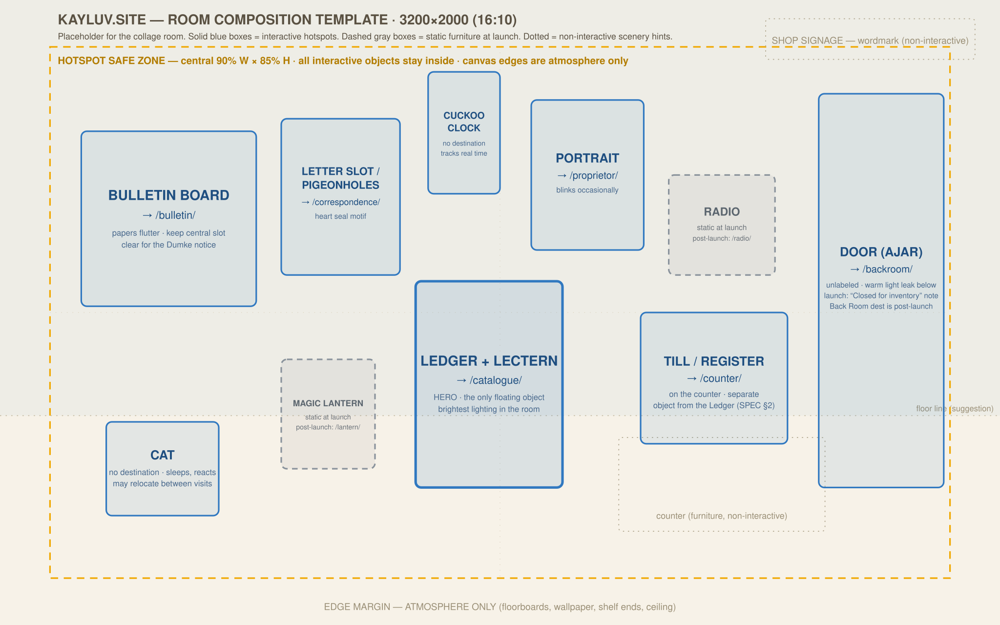

Kayluv — Music Publishing House

Sections
The Shop — you are here
The Catalogue
The Counter — scores
Bulletin — news & performances
Correspondence — contact & newsletter
The Proprietor
Listen — streaming links
Magic Lantern
(post-launch)
Radio
(post-launch)
The Back Room
(post-launch)
Sound
Sound: off
Volume
Sound arrives in a later build — these controls are not wired up yet.
×